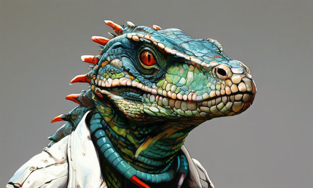

Главный врач ведущей клиники был едва не разоблачен

Уважаемый кардиохирург Игнис Дракарисс (земное имя: Игнат Дракорович)
едва не был разоблачен.
Увы, ввиду высокой нагрузки на своей земной работе он забыл об
обязательном обновлении маскировки. Специалисты "Чешуя и когти" успешно
замяли это происшествие, сославшись на усталость работников поликлиники
и незначительную утечку газа.
Гнездовье игуан
Несмотря на то, что данный журналист до сих пор находится на
испытательном сроке, редакция согласна с обновленными рекомендациям
по обустройству гнезд игуан.
Гнездо представляет собой короб, длина и ширина основания которой
примерно равны полутора длинам тела ящерицы. Высота не менее 25см +
две высоты самки. Не менее, чем на 25 см. Гнездовая камера заполняется
субстратом. В качестве субстрата можно использовать торф, кокосовую
крошку или мелко порезанный сфагнум. В любом случае субстрат должен
быть влагоёмким и лёгким. Самка утрамбовывает кладку и твёрдым грунтом
может повредить яйца. Субстрат замачивается (заливается кипятком),
слегка отжимается и помещается в гнездовую камеру.
Температура в гнезде поддерживается на уровне 30 градусов,
влажность 75-90%. Необходимо уделить внимание нагревательному
элементу: его ставят либо снаружи гнезда, либо качественно закрывают,
чтобы копающая самка не смогла добраться до него.
Источник.